Sinh lúc 2026-11-02 21:33 từ reports/results-*.json · mã nguồn
5cd6bea · Playwright, Chromium, retries 0 · app test cục bộ (backend/tests/e2e_server.py
+ Vite). Kỳ vọng lấy nguyên văn từ docs/test-cases.md (ghi trước khi chạy).
Bản in: test-report.pdf · bảng markdown: test-report.md · thư viện GIF: test-media.md
| TC | AC | run1 | run2 | Thời gian (s) |
|---|---|---|---|---|
| TC-201-01 | AC-201.1 | PASS | PASS | 8.4 / 8.4 |
| TC-201-02 | AC-201.1 | PASS | PASS | 7.3 / 7.1 |
| TC-201-03 | AC-201.1 | PASS | PASS | 9.4 / 8.3 |
| TC-201-04 | AC-201.1 | PASS | PASS | 9.4 / 8.3 |
| TC-201-05 | AC-201.2 | PASS | PASS | 7.5 / 7.4 |
| TC-201-06 | AC-201.2 | PASS | PASS | 7.2 / 8.1 |
| TC-201-07 | AC-201.3 | PASS | PASS | 2.7 / 2.9 |
| TC-201-08 | AC-201.3 | PASS | PASS | 2.9 / 2.7 |
| TC-201-09 | AC-201.3 | PASS | PASS | 2.8 / 2.9 |
| TC-201-10 | AC-201.3 | PASS | PASS | 2.8 / 3.0 |
| TC-201-11 | AC-201.3 | PASS | PASS | 3.1 / 3.1 |
| TC-201-12 | AC-201.4 | PASS | PASS | 5.5 / 9.2 |
| TC-201-13 | AC-201.4 | PASS | PASS | 19.2 / 22.6 |
| TC-303-01 | AC-303.1 | PASS | PASS | 3.3 / 3.3 |
| TC-303-02 | AC-303.1 | PASS | PASS | 3.4 / 3.5 |
| TC-303-03 | AC-303.1 | PASS | PASS | 3.5 / 3.6 |
| TC-303-04 | AC-303.2 | PASS | PASS | 7.4 / 7.6 |
| TC-303-06 | AC-303.3 | PASS | PASS | 3.8 / 3.9 |
| TC-303-07 | AC-303.3 | PASS | PASS | 3.9 / 4.0 |
| TC-303-08 | AC-303.3 | PASS | PASS | 3.9 / 4.0 |
| TC-303-09 | AC-303.4 | PASS | PASS | 3.3 / 3.4 |
| TC-303-10 | AC-303.1 | PASS | PASS | 3.3 / 3.3 |
Chưa chạy tự động (thủ công): TC-303-05.
| Mã | Loại | TC | Mức | Trạng thái |
|---|---|---|---|---|
| HD-1 | HD | TC-201-05 | Cao (báo sai một lỗi sản phẩm không có) | Đã sửa |
| HD-2 | HD | TC-201-12, TC-201-13 | Cao (test kịch bản khác với AC) | Đã sửa |
| HD-3 | HD | tất cả | Trung bình | Đã sửa |
| HD-4 | HD | TC-303-01, 06, 07, 08, 10 | Trung bình | Đã sửa |
| TD-1 | TD | TC-303-06 | Thấp | Đã sửa TC |
| TD-2 | TD | TC-303-09 | Thấp | Đã sửa TC |
| OBS-1 | OBS | (ngoài AC-201.4) | Thấp | Mở — chờ PO |
| AC | TC | Số TC | Heuristic phủ |
|---|---|---|---|
| AC-201.1 | TC-201-01, 02, 03, 04 | 4 | H, V, B, P |
| AC-201.2 | TC-201-05, 06 | 2 | H, V |
| AC-201.3 | TC-201-07, 08, 09, 10, 11 | 5 | N, B, V |
| AC-201.4 | TC-201-12, 13 | 2 | R |
| AC-303.1 | TC-303-01, 02, 03, 10 | 4 | H, V, P |
| AC-303.2 | TC-303-04, 05 | 2 | H, P (thủ công) |
| AC-303.3 | TC-303-06, 07, 08 | 3 | N, R |
| AC-303.4 | TC-303-09 | 1 | H (dữ liệu) |
| Bước | Bấm "Tải tài liệu", chọn HopDong_ABC.pdf (3 trang) |
|---|---|
| PASS khi | Dòng HopDong_ABC.pdf xuất hiện trong kho ≤ 2 s; sau đó badge "Sẵn sàng", meta "3 trang", "Bạn" ≤ 30 s |
| FAIL khi | Không có dòng, hoặc dừng ở trạng thái khác, hoặc sai số trang |
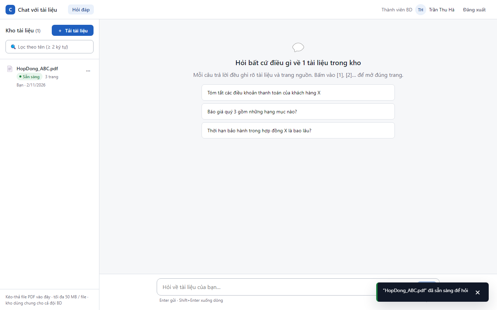
Tệp: TC-201-01.gif · TC-201-01.webm
| Bước | Kéo-thả file Hợp đồng ABC – bản ký.pdf (tên tiếng Việt có dấu, gạch dài) vào danh sách |
|---|---|
| PASS khi | Tên hiển thị đúng từng ký tự; đạt "Sẵn sàng" |
| FAIL khi | Tên bị biến đổi / mất dấu, hoặc không nhận khi kéo-thả |
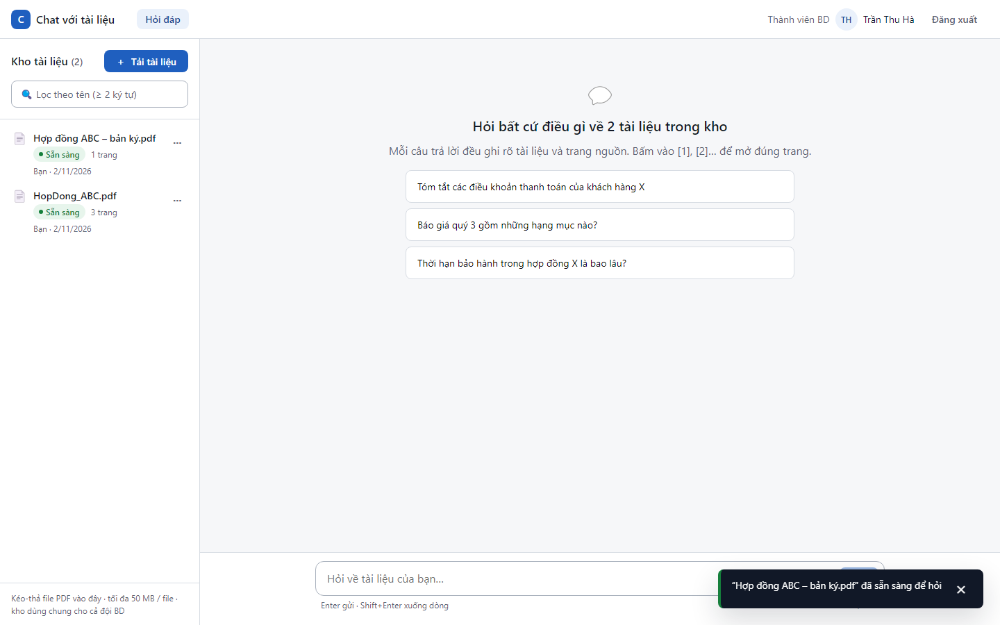
Tệp: TC-201-02.gif · TC-201-02.webm
| Bước | Mạng tải lên giả lập ~4 MB/s; chọn PDF hợp lệ 49,5 MB |
|---|---|
| PASS khi | Trong lúc tải: badge "Đang tải lên N%" với 0 < N < 100, progressbar có aria-valuenow tăng dần; cuối cùng không bị từ chối |
| FAIL khi | Không thấy %, % không tăng, hoặc bị báo vượt 50 MB |
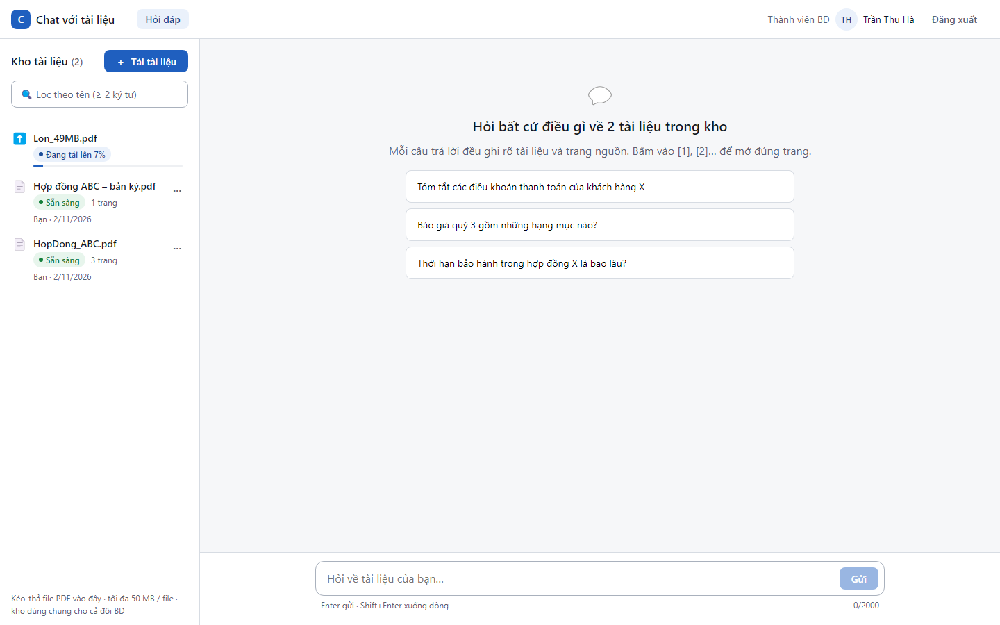
| Bước | (cùng lượt với TC-201-03) đo từ lúc chọn file tới "Sẵn sàng" |
|---|---|
| PASS khi | ≤ 300 s (NFR-03, môi trường cục bộ) |
| FAIL khi | > 300 s hoặc lỗi |
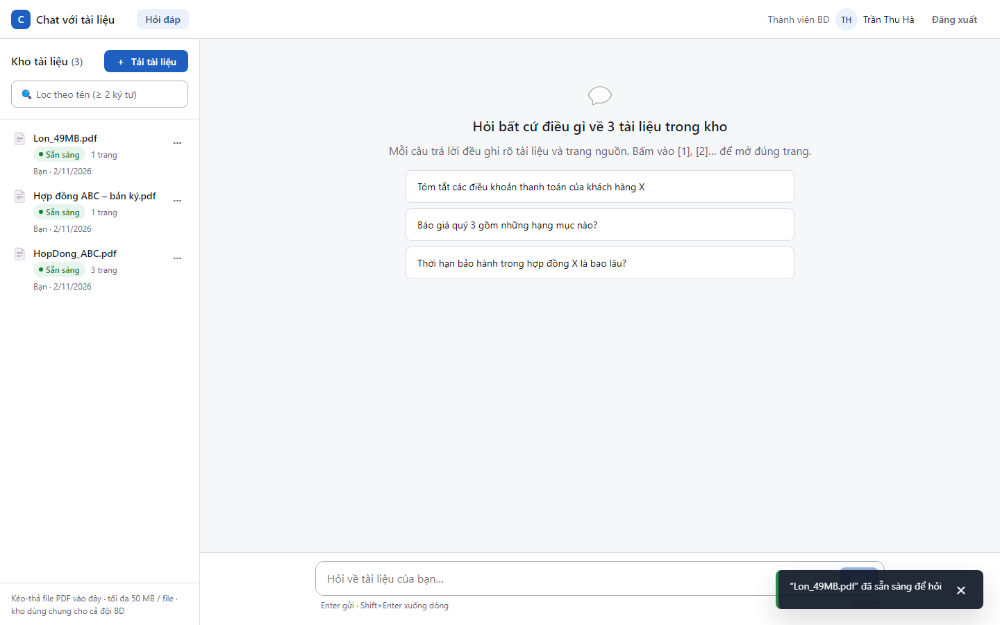
| Bước | Chọn cùng lúc 10 PDF hợp lệ khác nội dung |
|---|---|
| PASS khi | 10 dòng, mỗi dòng có badge riêng; không quá 3 yêu cầu POST /documents chạy đồng thời; cả 10 đạt "Sẵn sàng" |
| FAIL khi | Thiếu dòng, > 3 upload song song, hoặc có file không đạt |
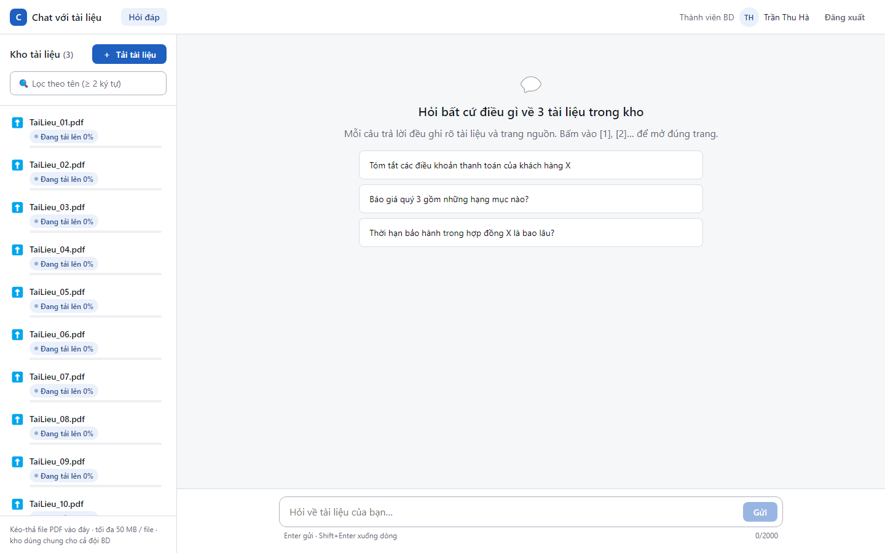
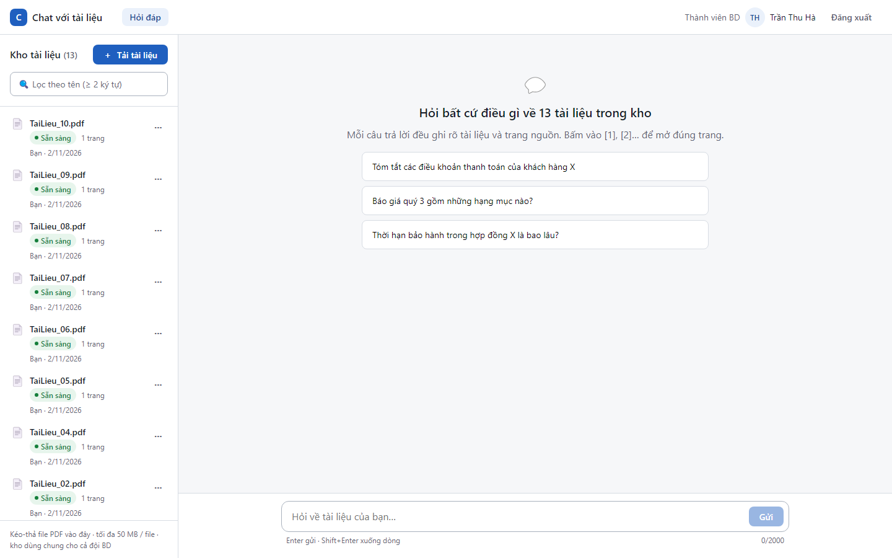
Tệp: TC-201-05.gif · TC-201-05.webm
| Bước | Chọn cùng lúc 9 PDF hợp lệ khác (TaiLieu_11–19) + 1 PDF hỏng (đầu %PDF- nhưng nội dung hỏng) |
|---|---|
| PASS khi | 9 dòng "Sẵn sàng", dòng file hỏng "Lỗi" kèm "File bị hỏng hoặc không mở được." — các file không ảnh hưởng nhau |
| FAIL khi | File hỏng làm hỏng file khác, hoặc không có lý do |
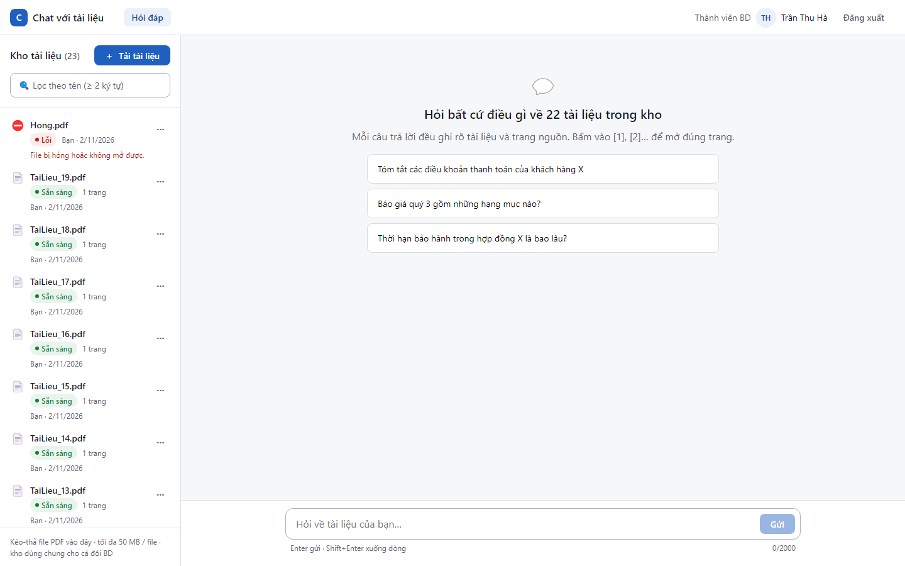
Tệp: TC-201-06.gif · TC-201-06.webm
| Bước | Chọn anh.png |
|---|---|
| PASS khi | Toast "anh.png: Chỉ hỗ trợ file PDF."; không có POST /documents; không có dòng trong kho |
| FAIL khi | Có request tải lên, hoặc file vào kho |
Tệp: TC-201-07.gif · TC-201-07.webm
| Bước | Chọn PDF 50 MB + 1 KB |
|---|---|
| PASS khi | Toast "… File vượt 50 MB. Hãy tách file hoặc liên hệ trưởng nhóm."; không có POST /documents |
| FAIL khi | Tải lên bắt đầu, hoặc không có lý do |
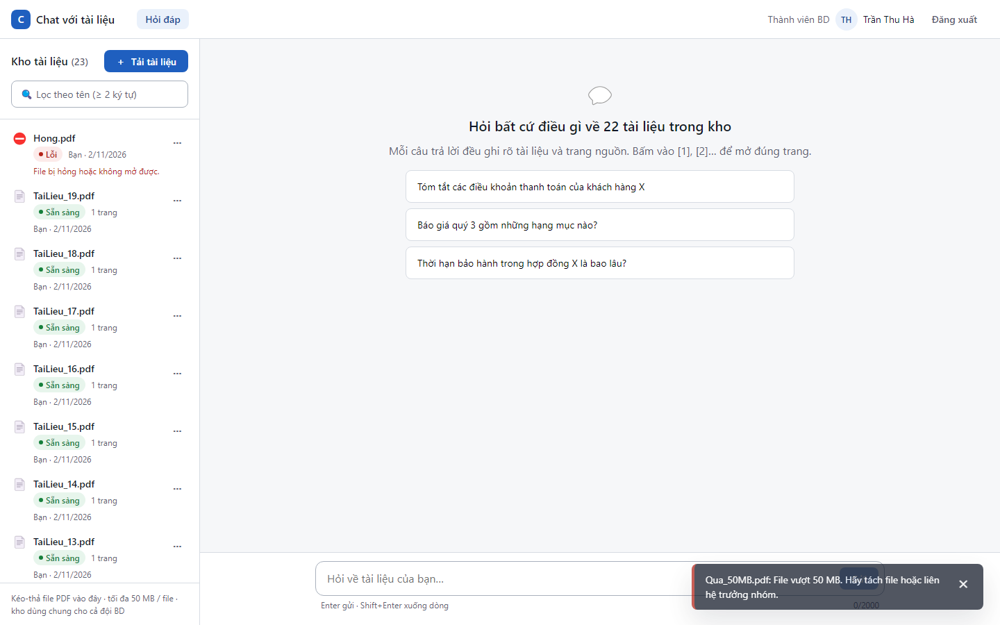
Tệp: TC-201-08.gif · TC-201-08.webm
| Bước | Chọn Word_doi_duoi.pdf (nội dung .doc, đuôi .pdf) |
|---|---|
| PASS khi | Máy chủ từ chối: toast "… Chỉ hỗ trợ file PDF."; kho không có dòng |
| FAIL khi | File vào kho |
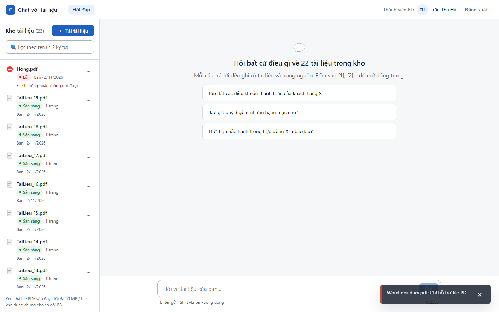
Tệp: TC-201-09.gif · TC-201-09.webm
| Bước | Chọn Rong.pdf (0 byte) |
|---|---|
| PASS khi | Bị từ chối kèm lý do; kho không có dòng |
| FAIL khi | File vào kho hoặc lỗi không có thông báo |
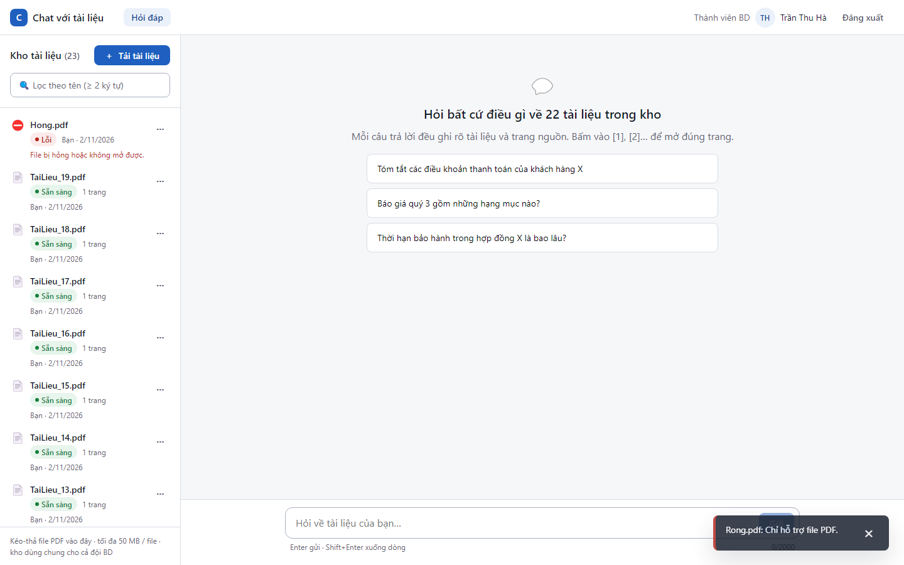
Tệp: TC-201-10.gif · TC-201-10.webm
| Bước | Chọn cùng lúc BaoGia_XYZ.pdf, anh.png, file 50 MB + 1 KB |
|---|---|
| PASS khi | 2 toast từ chối đúng lý do; BaoGia_XYZ.pdf vẫn đạt "Sẵn sàng" |
| FAIL khi | File hợp lệ bị chặn theo, hoặc thiếu lý do |
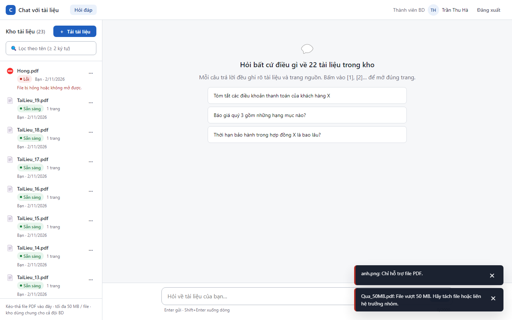
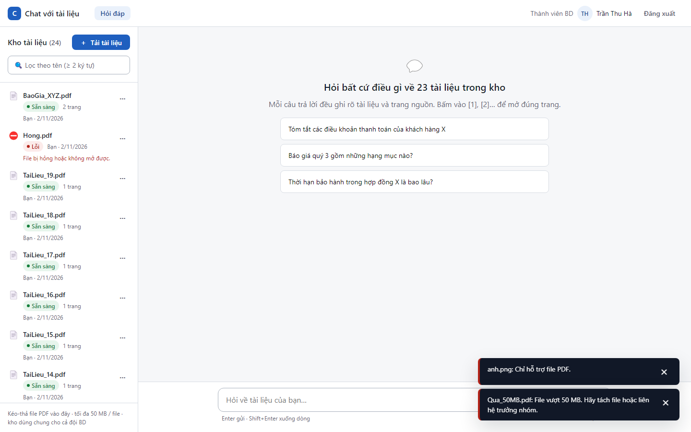
Tệp: TC-201-11.gif · TC-201-11.webm
| Bước | Chọn PDF 8 MB; khi đang tải (file chưa tới server) → mất mạng 2 s → có mạng lại ‹sửa r1, HD-2› |
|---|---|
| PASS khi | Thấy "Tạm dừng — mất kết nối"; sau khi có mạng, tự tải tiếp và đạt "Sẵn sàng" mà người dùng không phải làm gì; kho có đúng 1 dòng file đó |
| FAIL khi | Kẹt ở tạm dừng, mất file, hoặc phải tải lại tay |
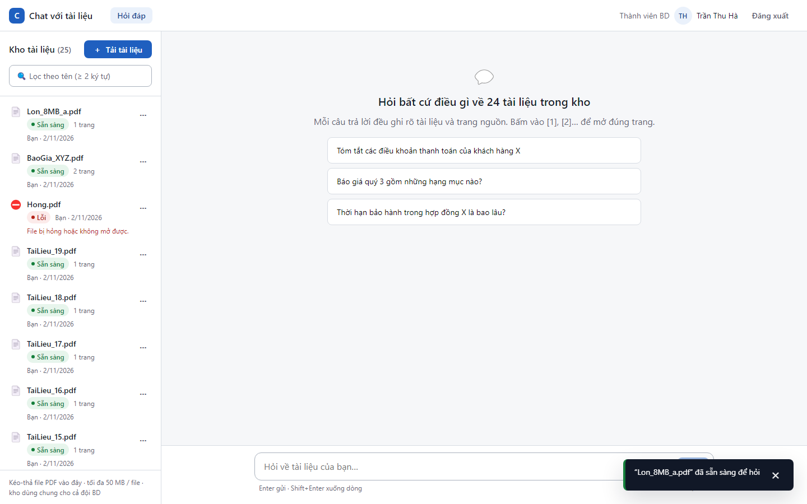
Tệp: TC-201-12.gif · TC-201-12.webm
| Bước | Chọn PDF 8 MB khác (file chưa tới server); mất mạng > 14 s (quá 3 lần thử 2/4/8 s) → có mạng lại → menu "Thử lại" |
|---|---|
| PASS khi | Đúng 1 lần gửi + 3 lần thử; rồi "Tải lên thất bại" + thông điệp kiểm tra kết nối + mục "Thử lại"; bấm "Thử lại" → "Sẵn sàng", 1 dòng |
| FAIL khi | Thử quá 3 lần, không có nút thử lại, hoặc thử lại không chạy |
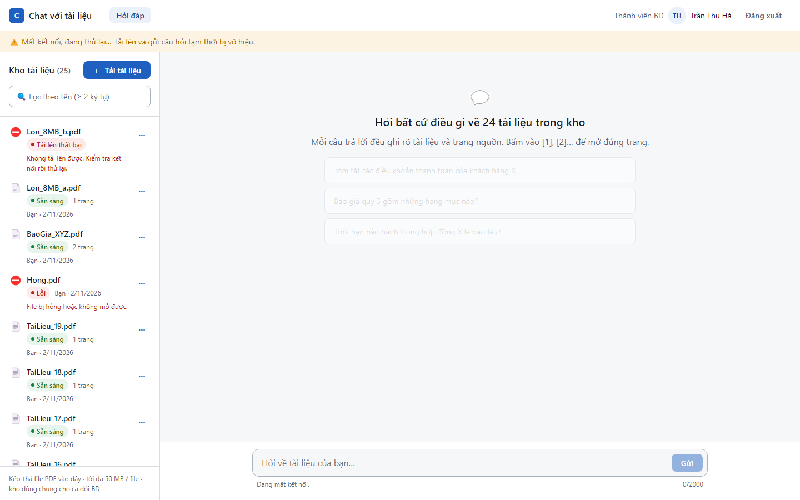
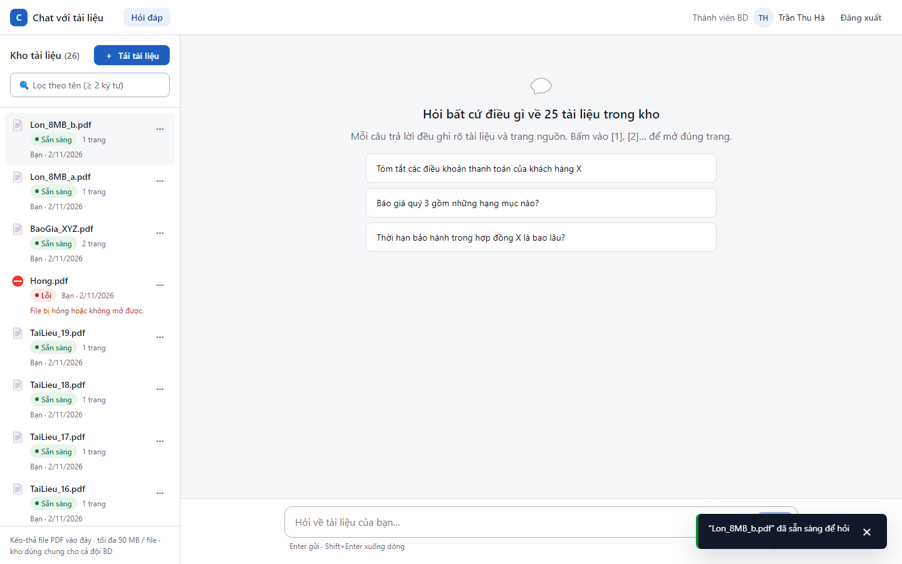
Tệp: TC-201-13.gif · TC-201-13.webm
| Bước | Hỏi "Điều khoản thanh toán của hợp đồng ABC là gì?" |
|---|---|
| PASS khi | Mỗi đoạn của câu trả lời có ≥ 1 chip trích dẫn [n]; cuối thẻ có mục "Nguồn" với dòng "HopDong_ABC.pdf — trang 2" |
| FAIL khi | Có đoạn không trích dẫn, không có mục Nguồn, hoặc định dạng khác "Tên — trang X" |
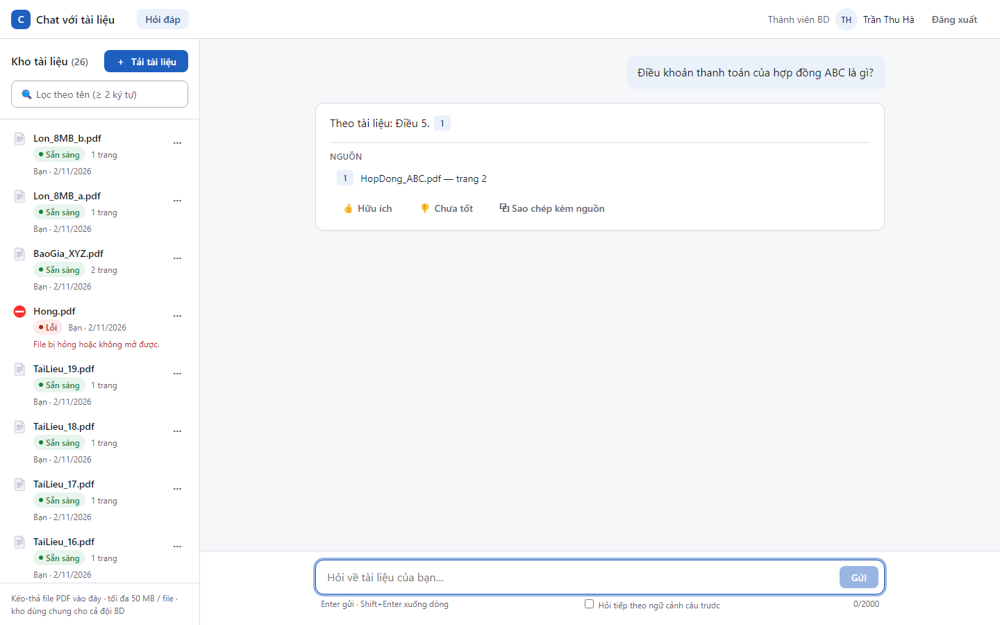
| Bước | Hỏi câu cần 2 tài liệu: "Thanh toán hợp đồng ABC và đơn giá triển khai báo giá XYZ?" |
|---|---|
| PASS khi | Mỗi đoạn có chip; mục Nguồn có cả HopDong_ABC.pdf và BaoGia_XYZ.pdf |
| FAIL khi | Chỉ một tài liệu, hoặc đoạn thiếu chip |
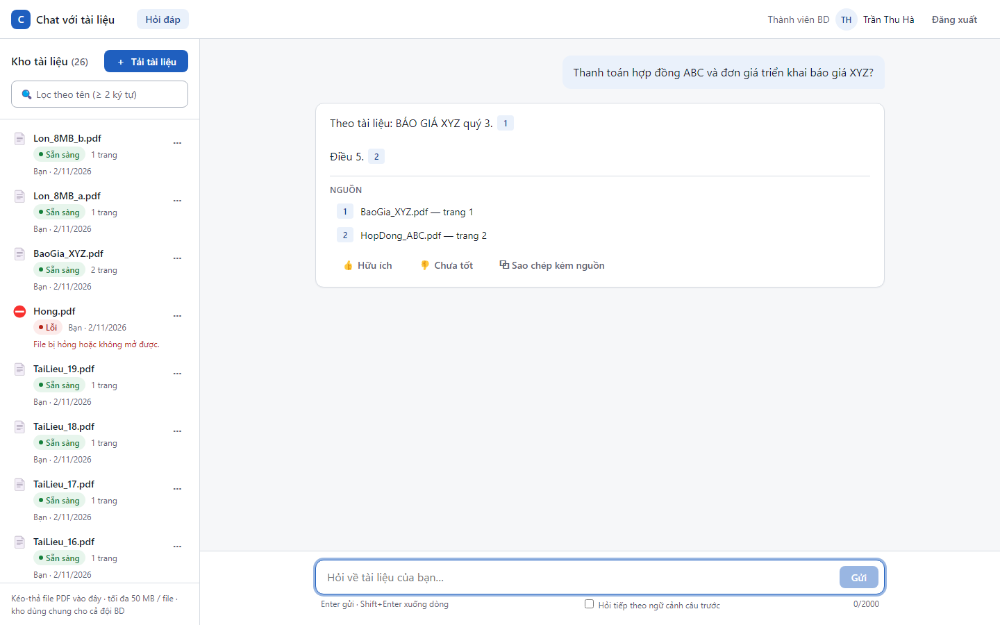
Tệp: TC-303-02.gif · TC-303-02.webm
| Bước | Hỏi tiếng Anh "What are the payment terms of the ABC contract?" |
|---|---|
| PASS khi | Câu trả lời tiếng Anh ("According to the documents…"), vẫn đủ chip và mục Nguồn |
| FAIL khi | Mất trích dẫn khi đổi ngôn ngữ |
Tệp: TC-303-03.gif · TC-303-03.webm
| Bước | Với mỗi chip của TC-303-01 và TC-303-02: bấm chip |
|---|---|
| PASS khi | Vùng nguồn mở đúng tài liệu, đúng trang ghi ở chip; đoạn trích được tô sáng và chứa từ khoá của ý (vd. "30%") |
| FAIL khi | Mở sai tài liệu / sai trang, hoặc không tô sáng được |
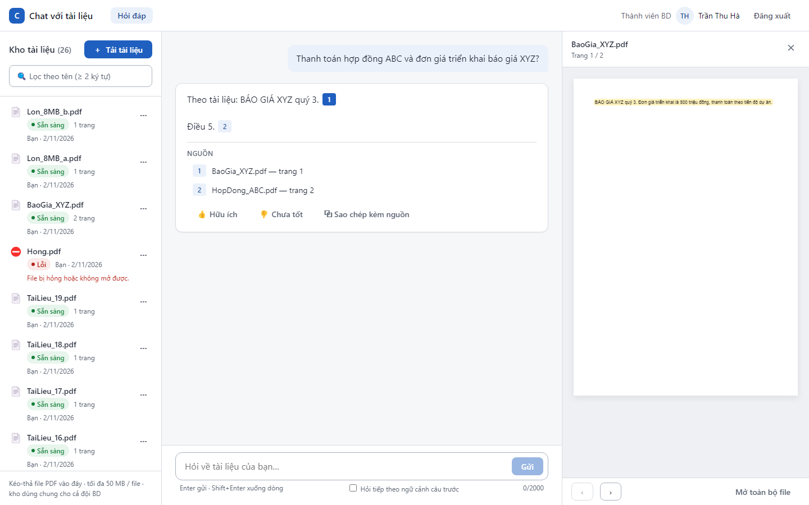
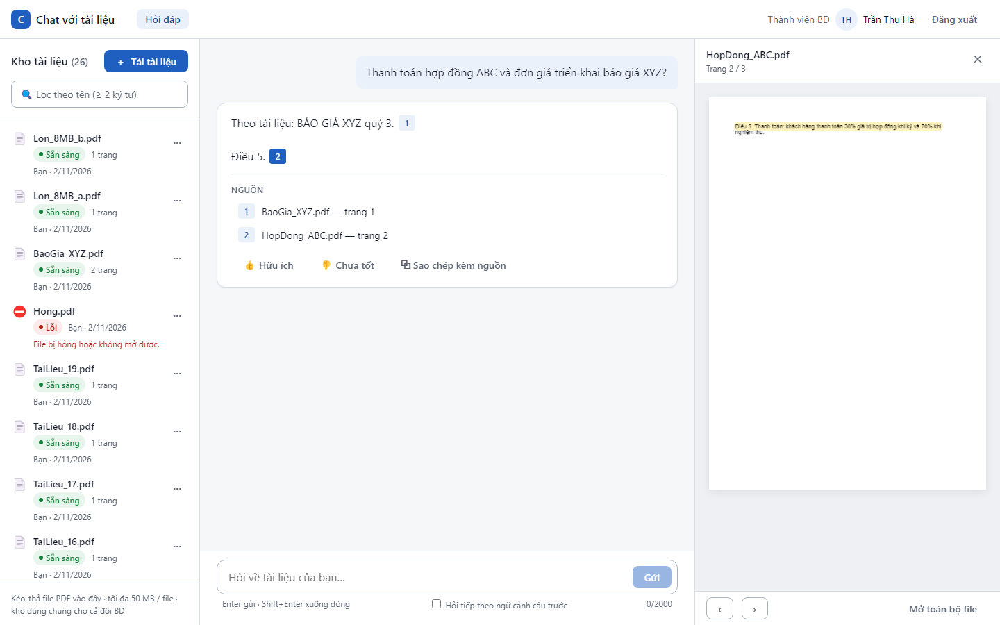
Tệp: TC-303-04.gif · TC-303-04.webm
| Bước | Hỏi câu khiến LLM trả lời không có trích dẫn (kịch bản #noref của LLM giả lập) |
|---|---|
| PASS khi | Thẻ trung tính "Không tìm thấy thông tin này trong N tài liệu hiện có", N = số tài liệu Sẵn sàng trong kho ‹sửa r1, TD-1›; không còn chữ do LLM viết; không có mục Nguồn |
| FAIL khi | Hiện câu trả lời không trích dẫn |
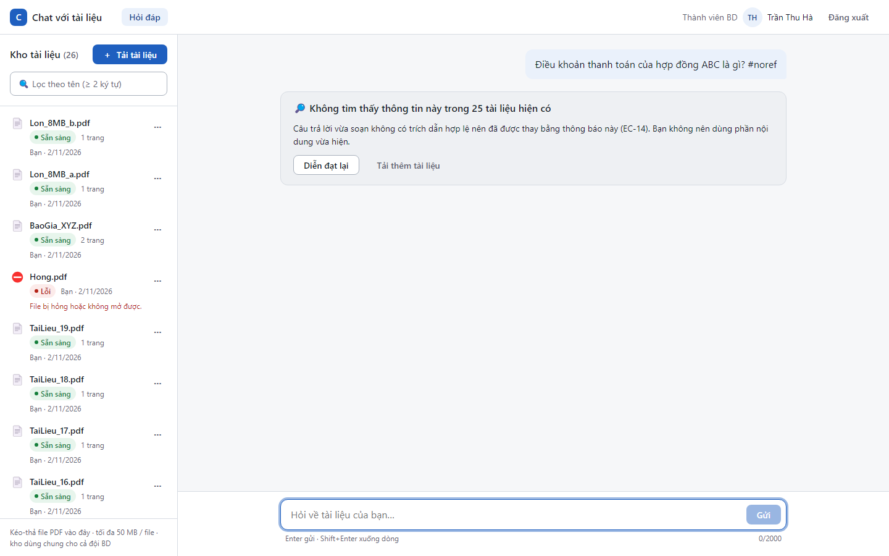
Tệp: TC-303-06.gif · TC-303-06.webm
| Bước | Hỏi câu khiến LLM trích dẫn số không có trong ngữ cảnh (#badref) |
|---|---|
| PASS khi | Như TC-303-06 |
| FAIL khi | Hiện số trích dẫn không tồn tại |
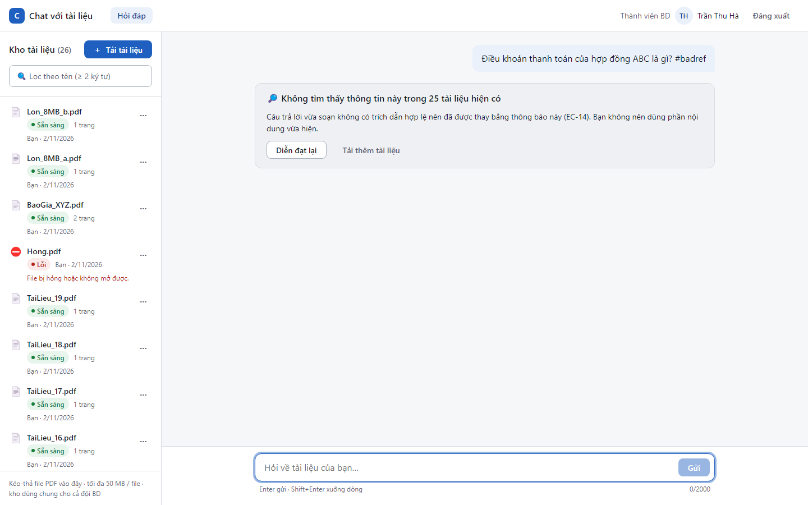
| Bước | Ngay sau TC-303-07, cùng hội thoại, hỏi lại câu của TC-303-01 |
|---|---|
| PASS khi | Câu trả lời bình thường, đủ chip và Nguồn — lỗi trước không làm hỏng hội thoại |
| FAIL khi | Thẻ lỗi / không tìm thấy lan sang câu sau |
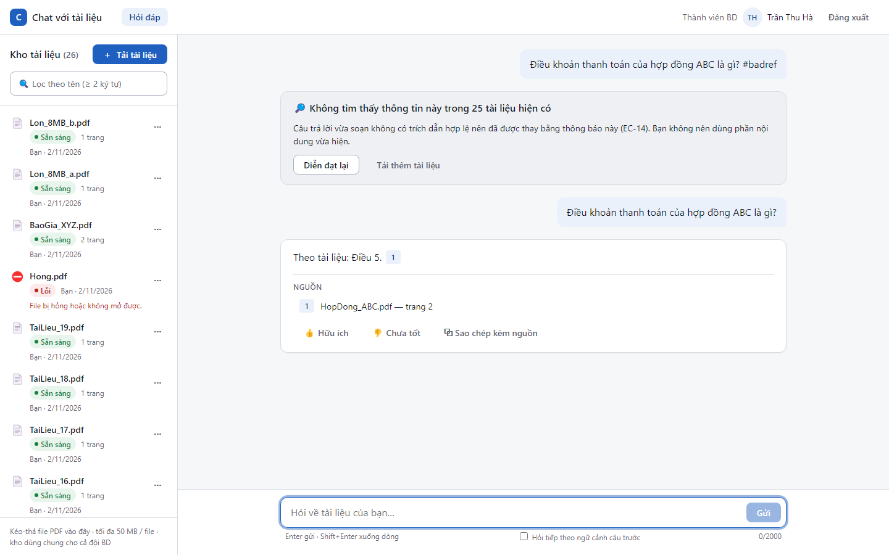
| Bước | Sau TC-303-01, đọc dữ liệu đã lưu: GET /api/v1/conversations/{id}/questions |
|---|---|
| PASS khi | Mỗi trích dẫn có fileName, page = trang thật trong PDF, excerpt là đoạn văn trong PDF (so theo từ, khoảng trắng gộp — PDF dùng no-break space ‹sửa r1, TD-2›; không chứa câu dẫn "Theo tài liệu:" do LLM viết) |
| FAIL khi | Excerpt lấy từ chữ LLM, hoặc trang không khớp PDF |
Tệp: TC-303-09.gif · TC-303-09.webm
| Bước | Đo trong TC-303-01 qua sự kiện SSE done |
|---|---|
| PASS khi | latencyMs ≤ 30 000 (NFR-01) và firstTokenMs ≤ 5 000 (NFR-02) |
| FAIL khi | Vượt ngưỡng |